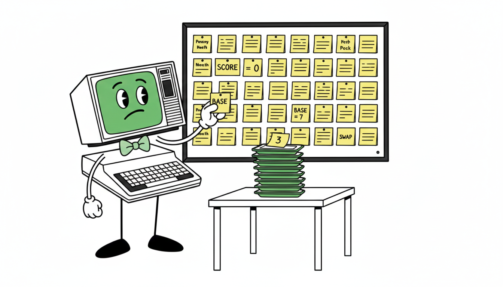
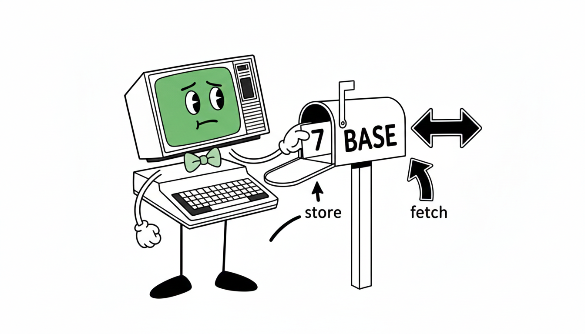
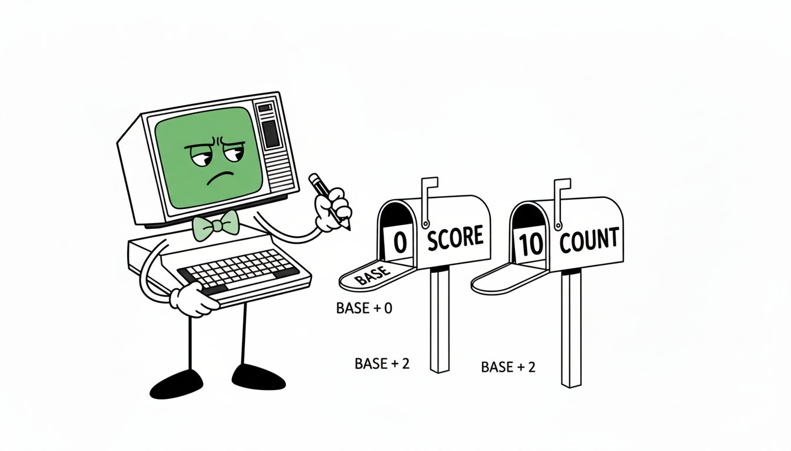

The stack is great for passing values from word to word. But it has one limitation: values on the stack disappear the moment something consumes them.
Suppose you compute a value that two separate words
both need — not two calls in a row, but two words with other
work happening in between. DUP won't help if the
second copy gets consumed before the second word runs.
What you need is a variable: a named slot in memory that holds a value until you decide to change it.

The word VARIABLE creates a named two-byte memory
cell. You give it a name, and from that point on, that name
refers to the cell's address.
VARIABLE BASE
After this line, BASE is a word. When you run it,
it doesn't push a value — it pushes the address of its
storage cell. Then you use ! and @ to
store and fetch values at that address.
Create a 2-byte memory cell named name. Running name pushes its address. The cell starts with value zero.
! (pronounced "store") takes a value and an
address, and writes the value into that address.
Store n at addr. Both are popped from the stack. The address is on top; the value is below it.
So to store 7 in BASE:
7 BASE !
Step by step: 7 pushes [ 7 ].
BASE pushes the address of its cell:
[ addr 7 ]. ! pops both and writes
7 into that address. Stack is now empty; the value is in memory.
@ (pronounced "fetch") takes an address and
replaces it with the 16-bit value stored there.
Fetch the 16-bit value stored at addr. The address is consumed; the value is pushed.
To retrieve what's in BASE:
BASE @
BASE pushes [ addr ].
@ replaces it with [ 7 ] — whatever
was last stored. You can call BASE @ as many times
as you like; the value stays in the cell every time.
The variable's name pushes an address, not a value.
Think of it like handing someone a mailbox number — they then
reach in with @ to read the letter, or put one in
with !.
Here's the key advantage of a variable: you can write words that read from it without the caller having to pass anything on the stack.
: LETTER CHAR A + EMIT ; VARIABLE BASE : THIS BASE @ LETTER ; \ print the stored letter : NEXT BASE @ 1 + LETTER ; \ print the one after it
THIS fetches the offset from BASE
and prints that letter. NEXT fetches the same
offset, adds 1, and prints the next letter.
Neither word needs a stack argument — they share data through
the variable.
: LETTER CHAR A + EMIT ; VARIABLE BASE : THIS BASE @ LETTER ; : NEXT BASE @ 1 + LETTER ; CHAR H CHAR A - BASE ! \ store H offset (7) THIS \ prints H NEXT \ prints I CR HALT
Trace: CHAR H CHAR A - computes 7.
BASE ! stores 7 in BASE
(stack is now empty). THIS runs
BASE @ LETTER: fetches 7, adds 65,
emits H. NEXT runs BASE @ 1 +
LETTER: fetches 7 again, adds 1 to get 8,
adds 65, emits I. The value in BASE
never changes — both calls read the same 7.
| Step | Stack | BASE cell |
|---|---|---|
| CHAR H CHAR A - | ( 7 ) | 0 |
| BASE ! | ( ) | 7 |
| THIS → BASE @ | ( 7 ) | 7 |
| LETTER → emits H | ( ) | 7 |
| NEXT → BASE @ | ( 7 ) | 7 |
| 1 + | ( 8 ) | 7 |
| LETTER → emits I | ( ) | 7 |
Notice that BASE still holds 7 after both
calls. @ reads without erasing — unlike the
stack, which disappears when you use it.
Because THIS reads from BASE at
runtime, you can change BASE and
THIS will immediately behave differently — without
redefining THIS.
CHAR H CHAR A - BASE ! \ BASE = 7 THIS \ prints H CHAR Z CHAR A - BASE ! \ BASE = 25 THIS \ prints Z
The word is the same; the data changes. This pattern — behavior controlled by a variable — is one of the most powerful tools in Forth.
Use the stack to pass values between words in a single chain of computation. Use a variable when a value needs to:

BASE, then call THIS.
What prints?
PREV that prints the letter
before the stored one. Hint: it's like
NEXT but with 1 - instead
of 1 +.
BASE, then call
THIS NEXT THIS. What three letters appear?
Why does the middle one differ?
STEP. Store 3
in it. Write a word JUMP that prints the
letter STEP positions past whatever is
in BASE. What does
0 BASE ! 3 STEP ! JUMP print?
value VAR ! to store
VAR @ to fetch
Words that share state through a variable
Changing behavior by changing data, not code
Variables hold addresses, not values
@ reads without consuming the cell
Stack for temporary; variable for persistent
Data-driven behavior